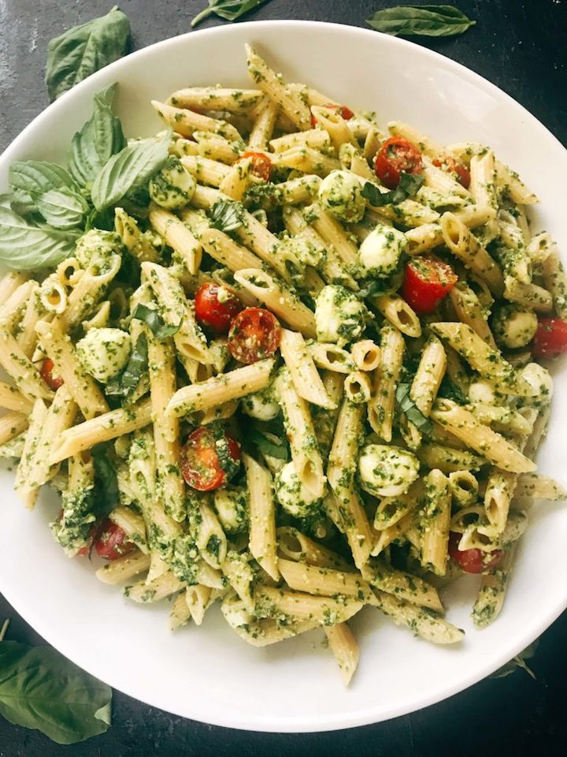

Pesto Pasta with Cherry Tomatoes and Fresh Mozzarella
A filling meal that only takes 30 minutes to make and requires no meal preparation. Plus, it is easy to make in big batches for lunch or dinner for the next day.

Source: Three Olives Branch's Pesto Caprese Penne Pasta
- You will need the following ingredients:
- 1 box of pasta
- 1 jar of Pesto Sauce
- 1 box of cherry tomatoes
- 1 pack of shredded mozzarella cheese
- Boil 10 cups of water in a large pot. Once the water starts to rapidly boil, add a big pinch of salt into the water.
- Throw in your pasta and follow the cooking directions as stated on the box.
- Once the pasta has been cooked to your liking, drain the pasta. DO NOT rinse the pasta.
- Pour the pasta in your mixing bowl and scoop out enough pesto sauce to your liking. Stir until the pasta is nicely coated with the pesto sauce.
- Wash the cherry tomatoes and cut the tomatoes in half. Add the tomatoes into the mixing bowl and stir until eveything is well mixed.
- Sprinkle the shredded mozzarella on top of the pasta and enjoy!